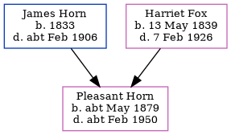

Sydney Bloom 1912 - c1974
[ Home ] | [ Calendar ] | [ Surnames Index ] | [ Census Index ] | [ Family History ]A grocers assistant all duties trade salesman, Sydney Bloom, the husband of Lilian Culmer (the second cousin once-removed on the mother's side of Nigel Horne), was born in Sculcoates, East Yorkshire, England on Aug 15, 19121,2,3. He married Lilian in Hull, East Yorkshire, England around Feb 19344. On Sep 29, 1939, he was living at 5 The Circle, Haltemprice, East Yorkshire1.
He died c. Feb 1974 in Hull3.
Citations
- 1939 Register - Findmypast (was the head of the household)
- England & Wales births 1837-2006 - Findmypast
- England & Wales deaths 1837-2007 - Findmypast
- England & Wales marriages 1837-2008 - Findmypast
Media
England & Wales marriages 1837-2008 Transcription - BMD-M-1934-1-AZ-000196-145
England & Wales marriages 1837-2008 - BMD/M/1934/1/AZ/000081/123
1939 Register Transcription - TNA-R39-3180-3180G-022-21
England & Wales deaths 1837-2007 - BMD/D/1974/1/AZ/000118/030
England & Wales births 1837-2006 - BMD/B/1912/3/AZ/000128/042
Family Tree
Generated by ged2site. Last updated on Jun 11, 2024